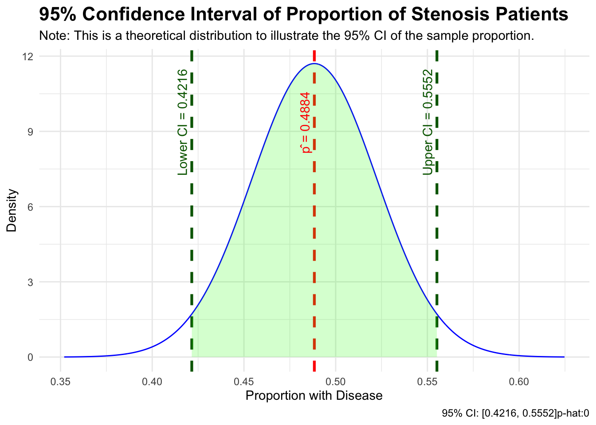

st_data <- read.csv("stenosis.txt", header = TRUE)Homework 9 - Biostatistics
Dylan Renard
Professor Proschan & Professor Nason
JHU Biostatistics
July 14th, 2025
Assignment for Biostatistics Week 9:
Download and open the “Stenosis” data from the class webpage. Assume this is a random sample from some population. Answer the following questions referring to this dataset.
In class:
1. What proportion of this sample has aortic stenosis (disease)? Give a 95% CI for the proportion of the population in this sample who have aortic stenosis.
library(ggplot2)
#Calculate the number with the disease
x <- sum(st_data$disease == 1)
n <- nrow(st_data)
p_hat <- x / n
# standard error and z* for 95% CI
se <- sqrt(p_hat * (1 - p_hat) / n)
z_star <- qnorm(0.975)
ci_lower <- p_hat - z_star * se
ci_upper <- p_hat + z_star * se
# Create a data frame for the normal curve
x_vals <- seq(p_hat - 4*se, p_hat + 4*se, length.out = 1000)
y_vals <- dnorm(x_vals, mean = p_hat, sd = se)
df <- data.frame(x = x_vals, y = y_vals)
# Annotating position (at top of curve)
y_max <- max(y_vals)
# Plot with ggplot2
ggplot(df, aes(x = x, y = y)) +
geom_line(color = "blue") +
geom_vline(xintercept = p_hat, color = "red", linetype = "dashed", linewidth = 1.1) +
geom_vline(xintercept = ci_lower, color = "darkgreen", linetype = "dashed", linewidth = 1.1) +
geom_vline(xintercept = ci_upper, color = "darkgreen", linetype = "dashed", linewidth = 1.1) +
geom_area(data = subset(df, x >= ci_lower & x <= ci_upper), aes(y = y), fill = "green", alpha = 0.2) +
# Annotations
annotate("text", x = p_hat, y = y_max * 0.8, label = paste0("p̂ = ", round(p_hat, 4)), color = "red", angle = 90, vjust = -0.5) +
annotate("text", x = ci_lower, y = y_max * 0.8, label = paste0("Lower CI = ", round(ci_lower, 4)), color = "darkgreen", angle = 90, vjust = -0.5) +
annotate("text", x = ci_upper, y = y_max * 0.8, label = paste0("Upper CI = ", round(ci_upper, 4)), color = "darkgreen", angle = 90, vjust = -0.5) +
labs(
title = "95% Confidence Interval of Proportion of Stenosis Patients",
x = "Proportion with Disease",
y = "Density",
subtitle = "Note: This is a theoretical distribution to illustrate the 95% CI of the sample proportion.",
caption = paste0("95% CI: [", round(ci_lower, 4), ", ", round(ci_upper, 4), "]", "p-hat:", round(p_hat)),
) +
theme_minimal() +
theme(plot.title = element_text(size = 16, face = "bold"))
2. Test the null hypothesis that 40% of this population has aortic stenosis. Write a one-sentence conclusion.
# proportion to test against 40% of this population has aortic stenosis.
p0 <- 0.4
# Standard error under null hypothesis
se_null <- sqrt(p0 * (1- p0) / n)
# z-score
z <- (p_hat - p0) / se_null
# two-tailed p-value
p_value <- 2 * (1 - pnorm(abs(z)))
# Output results
cat("Sample proportion:", round(p_hat, 4), "\n")Sample proportion: 0.4884 cat("Z statistic:", round(z, 4), "\n")Z statistic: 2.645 cat("P-value:", round(p_value, 4), "\n")P-value: 0.0082 Q2 Conclusion:
The sample proportion of individuals with aortic stenosis was 48.84%, and a two-sided test of \(H_0: p = 0.40\) resulted in a p-value of 0.00817, so we reject the null hypothesis at the 0.05 significance level.
3. Make a 2x2 table showing the association between gender and aortic stenosis.
# Load libraries
library(DT)
# Create a labeled 2x2 matrix
contingency <- table(st_data$sex, st_data$disease)
# Make it a proper data frame with custom column names
contingency_df <- as.data.frame.matrix(contingency)
colnames(contingency_df) <- c("No Aortic Stenosis", "Aortic Stenosis")
# Convert rownames (sex) into a column
contingency_df$Sex <- c("Female", "Male")
# Reorder columns for display
contingency_df <- contingency_df[, c("Sex", "No Aortic Stenosis", "Aortic Stenosis")]
# Display table with DT
datatable(contingency_df, rownames = FALSE,
options = list(dom = 't', ordering = FALSE),
caption = "2×2 Table: Sex vs Aortic Stenosis")a. Conduct a Fisher’s Exact Test on the 2x2 table to test the null hypothesis that there is no association between gender and aortic stenosis against the alternative hypothesis that there is an association. Write one (full) sentence giving your conclusions.
# Run Fisher's Exact Test
fisher_result <- fisher.test(table(st_data$sex, st_data$disease))
# View the p-value
fisher_result
Fisher's Exact Test for Count Data
data: table(st_data$sex, st_data$disease)
p-value = 0.006362
alternative hypothesis: true odds ratio is not equal to 1
95 percent confidence interval:
1.210725 3.869123
sample estimates:
odds ratio
2.154855 Q3a Conclusion:
A Fisher’s Exact Test found a p-value of 0.00636, so we reject the null hypothesis that sex and aortic stenosis are independent at the 0.05 significance level.
b. Conduct a Chi-square test on the same table. Do you get the same results as the fisher exact test? Any guess why or why not?
# Use the same contingency table from Q3a
table_sex_disease <- table(st_data$sex, st_data$disease)
# Run Chi-square test of independence
chisq_result <- chisq.test(table_sex_disease, correct = FALSE)
# View result
chisq_result
Pearson's Chi-squared test
data: table_sex_disease
X-squared = 7.7978, df = 1, p-value = 0.0052313b Conclusion:
A Chi-square test of independence on the 2×2 table of sex and aortic stenosis yielded a p-value less than 0.05 at 0.005231, consistent with the result from the Fisher’s Exact Test. Both tests lead us to reject the null hypothesis that sex and aortic stenosis are independent. This agreement is expected because our sample size is large enough for the Chi-square approximation to be valid. Fisher’s Exact Test is more accurate for small sample sizes or sparse tables, but in this case, both tests give similar results.
4. Pretend the people with aortic stenosis are a random sample of all people with this disease. Test the hypothesis that among the people with aortic stenosis, the proportion of women is 0.5. Give the estimated proportion and a 95% CI along with the test.
# Subset to only people with aortic stenosis
stenosis_disease <- subset(st_data, disease == 1)
# Number of people with aortic stenosis
n <- nrow(stenosis_disease)
# Number of women: sex = 0
x <- sum(stenosis_disease$sex == 0)
# Sample proportion
p_hat <- x / n
# Null hypothesis value
p0 <- 0.5
# Standard error under null
se_null <- sqrt(p0 * (1 - p0) / n)
# Z-statistic
z <- (p_hat - p0) / se_null
# Two-tailed p-value
p_value <- 2 * (1 - pnorm(abs(z)))
# 95% confidence interval (based on sample)
se_sample <- sqrt(p_hat * (1 - p_hat) / n)
z_star <- qnorm(0.975)
ci_lower <- p_hat - z_star * se_sample
ci_upper <- p_hat + z_star * se_sample
# Output
cat("Proportion of women among patients with aortic stenosis:", round(p_hat, 4), "\n")Proportion of women among patients with aortic stenosis: 0.4095 cat("95% CI: [", round(ci_lower, 4), ",", round(ci_upper, 4), "]\n")95% CI: [ 0.3155 , 0.5036 ]cat("Z-statistic:", round(z, 4), "\n")Z-statistic: -1.8542 cat("P-value:", round(p_value, 4), "\n") P-value: 0.0637 Q4 Conclusion:
Among patients with aortic stenosis, the estimated proportion of women was 40.95%, with a 95% confidence interval of [31.55%, 50.36%]. A two-sided test of \(H_0: p = 0.5\) resulted in a p-value of 0.0637, so we fail to reject the null hypothesis at the 0.05 significance level.
5. In a study of maternal smoking and congenital malformations, consider children born with an oral cleft. In a random sample of 27 such infants, 15 have mothers who smoked during pregnancy.
a. What is the point estimate for p? Construct a 95% confidence interval for the population proportion.
# Given data
x_5 <- 15
n_5 <- 27
p_hat_5 <- x_5 / n_5
# Standard error
se_5 <- sqrt(p_hat_5 * (1 - p_hat_5) / n_5)
# z* for 95% CI
z_star <- qnorm(0.975)
# Confidence interval
ci_lower_5 <- p_hat_5 - z_star * se_5
ci_upper_5 <- p_hat_5 + z_star * se_5The point estimate of the proportion of mothers who smoked is 55.56%. The 95% confidence interval for the population proportion is [36.81%, 74.3%].
b. You would like to know whether the proportion of mothers who smoked during pregnancy for children with an oral cleft is identical to the proportion of mothers who smoked for children with other types of malformations, which is 32.8%. What is the null hypothesis of the appropriate test?
Null hypothesis (\(H_0\)): The proportion of mothers who smoked during pregnancy for children with an oral cleft is equal to the proportion for children with other types of malformations; that is, \(p = 0.328\).
c. What is the alternative hypothesis?
Alternative hypothesis (\(H_A\)): The proportion of mothers who smoked during pregnancy for children with an oral cleft is different from the proportion for other malformations; that is, \(p \neq 0.328\).
d. Conduct the test at the .01 level of significance
# Values from earlier
x_5 <- 15
n_5 <- 27
p_hat_5 <- x_5 / n_5
p0_5 <- 0.328
# Standard error under null
se_null_5 <- sqrt(p0_5 * (1 - p0_5) / n_5)
# Z-score
z_5 <- (p_hat_5 - p0_5) / se_null_5
# Two-sided p-value
p_value_5 <- 2 * (1 - pnorm(abs(z_5)))
# Output
cat("Z-statistic:", round(z_5, 4), "\n")Z-statistic: 2.5185 cat("P-value:", round(p_value_5, 4), "\n")P-value: 0.0118 At the 0.01 level of significance, a two-sided z-test of \(H_0: p = 0.328\) yielded a z-statistic of 2.5185 and a p-value of 0.0118.
e. What do you conclude?
Since the p-value of 0.0118 is greater than the 0.01 significance level, we fail to reject the null hypothesis. Therefore, we do not have sufficient evidence to conclude a difference in maternal smoking rates between oral cleft cases and other malformations.
6. Suppose you are interested in investigating the factors that affect the prevalence of tuberculosis among intravenous drug users. In a group of 97 individuals who admit to sharing needles, 24.7% had a positive tuberculin skin test result; among 161 drug users who deny sharing needles, 17.4% had a positive test result.
a. Assuming that the population proportions of positive skin test reuslts are in fact equal, estimate the common value p.
# Group sizes and positives
n1 <- 97
x1 <- round(0.247 * n1) # 24
n2 <- 161
x2 <- round(0.174 * n2) # 28
# Pooled proportion under H0
p_pooled <- (x1 + x2) / (n1 + n2)
p_pooled[1] 0.2015504c. What do you conclude?
Since the p-value of 0.154 is greater than 0.05, we fail to reject the null hypothesis that the proportions of tuberculin-positive results are equal between the two groups.
d. Construct a 95% confidence interval for the true difference in proportions
se_unpooled <- sqrt((p1_hat * (1 - p1_hat)) / n1 + (p2_hat * (1 - p2_hat)) / n2)
ci_lower_6 <- (p1_hat - p2_hat) - qnorm(0.975) * se_unpooled
ci_upper_6 <- (p1_hat - p2_hat) + qnorm(0.975) * se_unpooledThe 95% confidence interval for the true difference in proportions is [-3.04%, 17.74%], comparing those who share needles to those who do not.
7. In a study of intra-observer variability in the assessment of cervical smears, 3325 slides were screened for the presence or absence of abnormal squamous cells. Each slide was screened by a particular observer and then rescreened six months later by the same observer. The results of this study are shown below:
| First Screening | 2nd: present | 2nd: absent | Total |
|---|---|---|---|
| Present | 1763 | 489 | 2252 |
| Absent | 403 | 670 | 1073 |
| Total | 2166 | 1159 | 3325 |
a. Do these data support the null hypothesis that here is no association between time of screening and diagnosis?
Null hypothesis (\(H_0\)): The diagnosis is independent of the time of screening (basically no association between first and second results).
R Code to run Chi-Square Test of Independence:
# Create the 2x2 table
smear_table <- matrix(c(1763, 489, 403, 670),
nrow = 2, byrow = TRUE,
dimnames = list(
`First Screening` = c("Present", "Absent"),
`Second Screening` = c("Present", "Absent")
))
# Run chi-square test
chisq_result_7 <- chisq.test(smear_table, correct = FALSE)
chisq_result_7
Pearson's Chi-squared test
data: smear_table
X-squared = 530.88, df = 1, p-value < 2.2e-16A chi-square test of independence was conducted to test whether the results of the first and second screenings were associated. The test yielded a chi-square statistic of 530.88 with a p-value of 2.2e-16.
Since the p-value of 2.2e-16 is less than the 0.05 significance level, we reject the null hypothesis.
Therefore, we conclude that there is a statistically significant association between the time of screening and diagnosis.
The data could also be displayed in the following manner:
| Abnormal cells | 1st screen | 2nd screen | Total |
|---|---|---|---|
| Present | 2252 | 2166 | 4418 |
| Absent | 1073 | 1159 | 2232 |
| Total | 3325 | 3325 | 6650 |
b. Is there anything wrong with this presentation? How would you analyze these data?
Yes, the second presentation of the data is misleading. It treats the first and second screenings as if they were conducted on different slides, doubling the total sample size from 3325 to 6650. This falsely implies independent observations when, in fact, the data are paired — each slide was screened twice by the same observer.
To properly analyze the data, we should use the 2×2 contingency table showing the cross-tabulation of first and second screening results and apply a chi-square test of independence (or McNemar’s test if focusing on disagreement between screenings).